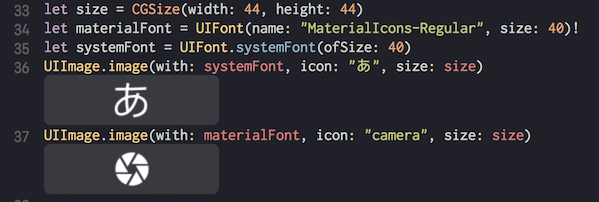

- Thu 19 October 2017
- development
- mani3
- #ios
watchOS の Complication のコンテンツによって、画像のサイズはさまざまです。
- https://developer.apple.com/watchos/human-interface-guidelines/icons-and-images/complication-images/
フォント文字を画像にする
以下のようなメソッドを用意しておけば便利です。 文字の色は白固定です。
extension UIImage {
class func image(with font: UIFont, icon: NSString, size: CGSize) -> UIImage {
let rect = CGRect(x: 0, y: 0, width: size.width, height: size.height)
UIGraphicsBeginImageContext(rect.size)
let context = UIGraphicsGetCurrentContext()
context?.translateBy(x: size.width / 2, y: size.height / 2)
context?.setFillColor(UIColor.clear.cgColor)
context?.fill(rect)
let paragraph = NSMutableParagraphStyle()
paragraph.alignment = .center
let attribute: [NSAttributedStringKey: Any] = [
NSAttributedStringKey.font: font,
NSAttributedStringKey.foregroundColor: UIColor.white,
NSAttributedStringKey.paragraphStyle: paragraph,
]
let size = icon.size(withAttributes: attribute)
let point = CGPoint(x: -size.width / 2, y: -size.height / 2)
icon.draw(at: point, withAttributes: attribute)
let image = UIGraphicsGetImageFromCurrentImageContext()!
UIGraphicsEndImageContext()
return image
}
}
使い方

ちなみに
Playground でフォントファイルを扱うときは、Playground の Resources というディレクトリにフォントファイルをおいて、Playground のはじめに以下を書くと外部のフォントファイルが扱えました。
let fontURL = Bundle.main.url(forResource: "MaterialIcons-Regular", withExtension: "ttf")
CTFontManagerRegisterFontsForURL(fontURL! as CFURL, CTFontManagerScope.process, nil)